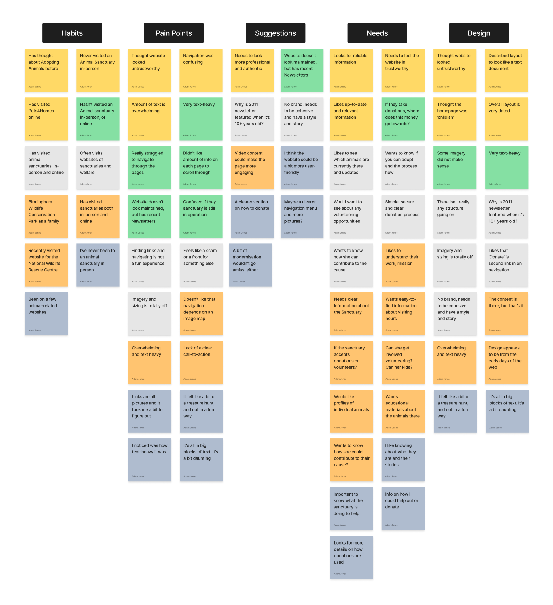
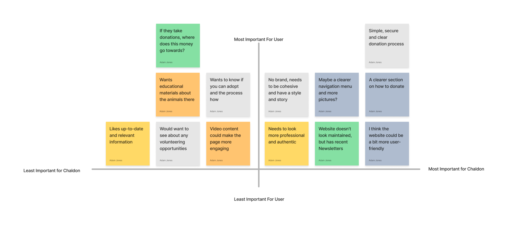
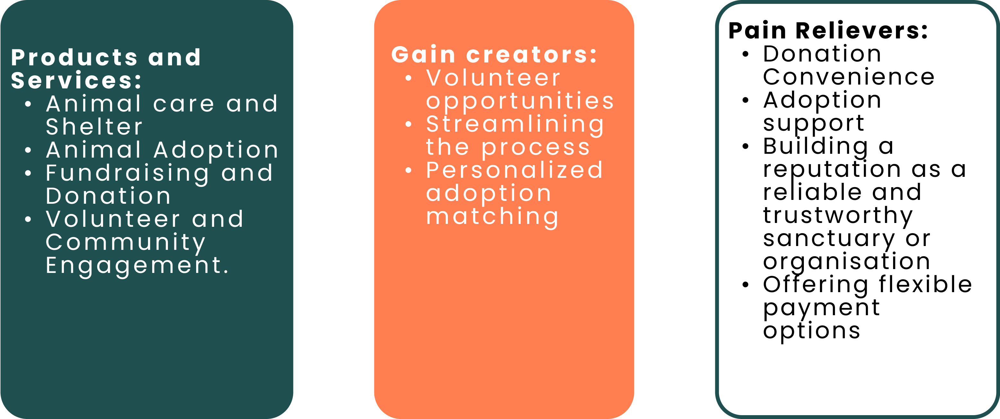
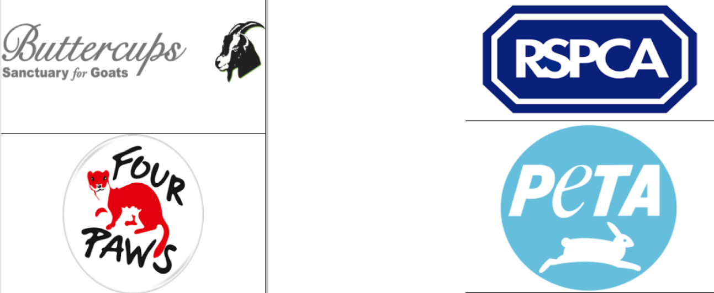
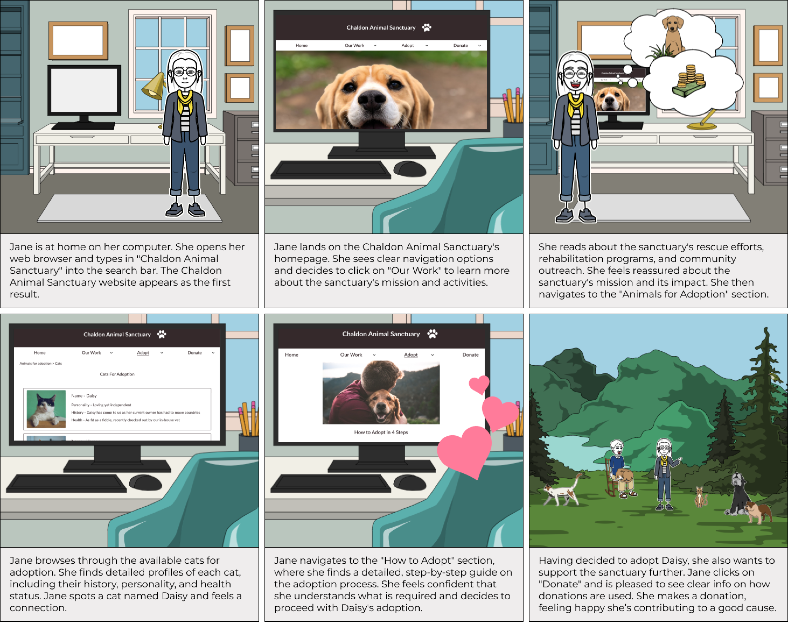
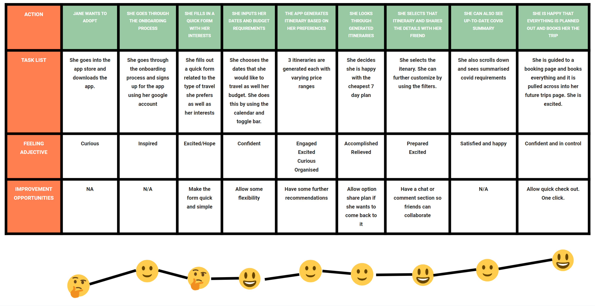

Website redesign - Bootcamp Project.
Background
Chaldon Animal Sanctuary is a UK-based animal sanctuary providing lifelong care for cats and dogs with behavioral problems. Their website serves as a primary point of contact with potential donors, volunteers, and individuals interested in their work. However, the website may not be fully optimized for this purpose and there is a potential need to increase the user experience and functionality to enhance donations and engagement.
Goals
- Understand the existing user experience and identify key areas for improvement.
- Increase the website's effectiveness in driving donations.
- Increase user engagement and satisfaction with the website.
My Role
User researcher, UX/UI designer, Tester.
Tools used
Figma, Miro, Google Suite, Maze.
Timeline
3 weeks.
Problem: Why was the Redesign needed?
The current Chaldon Animal Sanctuary website struggles with inconsistencies in navigational and informational structure, compounded by a visually un-appealing design that fails to resonate with users. The website's poor aesthetic and structural flaws are evident in the varied success rates across different tasks in the usability testing, with some tasks showing significant user struggle to locate information or navigate to desired sections. These issues not only disrupt the user experience but also detract from the site's overall appeal, potentially impacting the Sanctuary's primary goal of increasing donations.
Keep reading or Skip to solution
Emphasise - Researching the users needs?
Overview
- Heuristic Analysis
- Usability testing of current site & Group Interviews
- User Persona
Does the current website meet the users' expectations?
Homepage
Donation page
Is the current website user friendly?
We employed a range of research methods, such as conducting a group interview session via Zoom, gathering real-time user feedback through Maze.co, and utilizing surveys, we gained valuable insights into user perspectives, preferences, and pain points. This extensive research provided us with a comprehensive understanding of how users interacted with the original home page and guided us in identifying areas for improvement and enhancement.
Synthesising findings to create a User Persona
The User Persona served as a guiding light throughout the design process, ensuring our choices aligned with the expectations and desires of Chaldon Animal Sanctuary's users.
Define - What are the users needs and problems?
Overview
- Affinity Diagramming
- Feature prioritization
- Empathy mapping
- Competitor analysis
What is most important for the animal sanctuary and the sites visitors?
What were the insights gained from user interviews and testing?
We created an Affinity Diagram to analyse and synthesise the valuable insights gathered from our user testing interviews. It allowed us to identify patterns, themes, and commonalities in the feedback and responses provided by our interview participants. By collecting data and opinions, we gained a deep understanding of user needs, wants, and expectations:
- Simple and clear donation process
- Cohesive brand, style and story
- Professional and authentic
Which features should we prioritise?
we utilized a feature prioritization matrix to gain key insights and make informed decisions. The feature prioritization matrix helped us assess and prioritize different features based on their importance and impact on the user experience. By evaluating each feature against criteria such as user needs, business goals, and technical feasibility, we were able to determine the most crucial elements to include in the design.
Empathy mapping
Using the data collected, I created an empathy map that visualize the user's perspective. By analyzing the empathy map, I identified pain points, challenges, and frustrations that users experience throughout their journey. These pain points could be usability issues, complex workflows, lack of clarity, or any other obstacles hindering a seamless user experience. On the other side of the spectrum, I identified opportunities to create value and delight for users. These gain creators could be features, interactions, or services that enhance the user experience, exceed expectations, and fulfill user desires. Armed with these insights, we were readu to now design solutions that address the pain points and leverage the gain creators. We used a user-centered design approach, involving wireframing, prototyping, and iterative testing to refine the user experience and ensure it aligns with the users' needs and preferences. This then assisted us to come up with our value proposition.
Competitor Analysis
To further understand our users, we carried out a competitor analysis. We examined two direct and indirect competitors and identified several issues they faced. These issues included controversial reputations, limited geographical reach in the UK compared to local sanctuaries, and negative experiences. This analysis highlighted the importance of authenticity and transparency in our approach.
Ideate
Overview
- User insight and scenario
- Value proposition
- Storyboarding
- User flow
- Wirframe
- Moodboarding
User Insight and Scenario
Through user interviews and observations, I discovered that potential adopters like Sarah have a strong desire to make a positive impact on animal welfare through adoption and financial support. With this insight in mind, I crafted a user-centric design solution that prioritized ease of information access, intuitive navigation, and transparency regarding how donations are utilized.
My approach focused on creating a seamless user experience that empowers individuals like Sarah to navigate the website effortlessly, explore available cats for adoption, and understand the sanctuary's work. By leveraging my expertise in UX/UI design, I strived to create a platform that not only meets the users' goals but also resonates with their aspirations.
The user scenario that we had come up with was:
Jane wants to adopt a rescue cat. She is also considering making a donation to an animal sanctuary. She has heard about Chaldon Animal Sanctuary and decides to explore their website to learn more about their work, see available cats for adoption, and determine how her donation would be
This assisted us in developing Chaldon's value proposition.
Value Proposition
“Transform lives: adopt, give transparently, and make a difference with Chaldon Animal Sanctuary.”
What's our users journey?
Storyboarding
User Journey Map
To understand potential pain points and discover improvement opportunities for our users, we identified several areas of improvement. These include providing transparency about how donations are utilized, ensuring high-quality and appealing animal photographs, and enhancing the visual appeal of the mission statement.